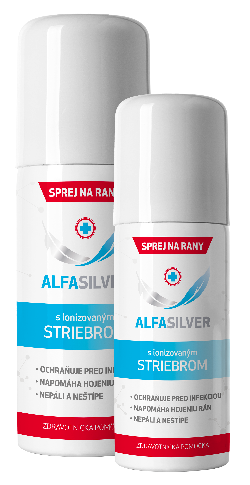
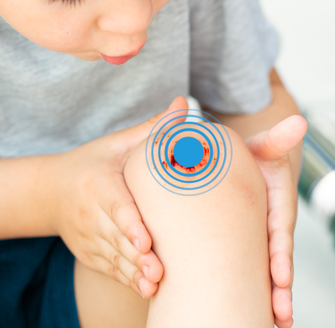

<!DOCTYPE html>
<html lang="cs">
  <title>Alfasilver sprej na rany a odreniny</title><meta name="viewport" content="width=device-width, initial-scale=1">
  <meta name="description" content="#{i18n.wounds.description}"/>
  <link href="css/fonts.css" rel="stylesheet"/><link rel="stylesheet" href="https://cdn.jsdelivr.net/npm/bootstrap@4.0.0/dist/css/bootstrap.min.css" integrity="sha384-Gn5384xqQ1aoWXA+058RXPxPg6fy4IWvTNh0E263XmFcJlSAwiGgFAW/dAiS6JXm" crossorigin="anonymous">
  <link href="css/general.css" rel="stylesheet"/><link rel="icon apple-touch-ico" type="image/png" href="images/logo.png"/>
  <script>
    function runGTM(){ 
    (function(w,d,s,l,i){w[l]=w[l]||[];w[l].push({'gtm.start':
    new Date().getTime(),event:'gtm.js'});var f=d.getElementsByTagName(s)[0],
    j=d.createElement(s),dl=l!='dataLayer'?'&l='+l:'';j.async=true;j.src=
    'https://www.googletagmanager.com/gtm.js?id='+i+dl;f.parentNode.insertBefore(j,f);
    })(window,document,'script','dataLayer','GTM-TQXZT6H');}
    
  </script><script src="js/script.js">
</script>
<meta charset="UTF-8">  
</meta></link></meta></html>
<body> 
  <div class="container--header">
     <video id="background-video" autoplay="" loop="" muted="" poster="images/alfasilver-poster.jpg">
<source src="videos/alfasilver-20s.mp4" type="video/mp4">
</source></video>
    <header class="container--margin introduction--container nopadding-top">
      <div class="header-top">
        <div class="logo"></div>
        <nav class="desktop-only-1024">
          <ul> 
            <li class="raise"><a href="#alfasilver">Na každý pád</a></li>
            <li class="raise"><a href="#wounds">Sprej na rany</a></li>
            <li class="raise"><a href="#properties">Prečo mať poruke</a></li>
            <li class="raise"><a href="#instructions">Návod na použitie</a></li>
            <li class="raise"><a href="#partners">Kde kúpiť</a></li>
            <li class="raise"><a href="#contact">Kontakty</a></li>
          </ul>
        </nav>
      </div>
      <div class="d-flex">
        <div class="desktop-col-spray desktop-only-1024"></div>
        <div class="desktop-col-text">
          <div class="header">
            <h2>Aby pády dobre</h2>
            <h1>dopadli</h1>
          </div>
          <div class="slider slider--animate">
            <div>Nepáli</div>
            <div class="hidden">Nepáli</div>
            <div class="hidden">Neštípe</div>
            <div class="hidden">Kryje rany</div>
            <div class="hidden">Chráni pred infekciou</div>
          </div>
        </div>
      </div>
    </header>
  </div>
  <main>
    <article class="container--margin alfasilver--container" id="alfasilver">
      <div class="d-flex">
        <div class="desktop-col-spray"> </div>
        <div class="desktop-col-text">
          <div class="d-flex">
            <div class="mobile-col-6 text-center mobile-only">
              <p class="img-label text-center">Zdravotnický prostředek</p>
            </div>
            <div class="mobile-col-6">
              <h4><b>Alfasilver</b> Sprej na rany a odreniny</h4>
            </div>
          </div>
          <h2 class="margin-bottom-16">Na každý pád</h2>
          <p>Čo si budeme hovoriť. Pády k životu patria. Predchádzajú väčšine našich zranení. Odreninám, škrabancom, popáleninám aj ranám. Padáme pri behu, chôdzi, jazde na bicykli, kolobežke, trojkolke, skejte alebo inline korčuliach. Padáme všetci bez rozdielu. Šikovní, nemehlá, malí aj veľkí.</p>
          <p>Pády sa však nemusia končiť v bolestiach a slzách.</p>
          <p>Ak máme poruke sprej Alfasilver, dopadne väčšina pádov dobre.</p>
          <h5 class="font-weight-bold">Alfasilver. Na každý pád.</h5>
        </div>
      </div>
    </article>
    <article class="container--margin wounds--container" id="wounds">
      <div class="d-flex"><div class="desktop-col-spray">
</div>
        <div class="desktop-col-text">
          <h2 class="margin-bottom-16 font-weight-bold">Sprej na rany</h2>
          <p>Bezbolestné ošetrenie akútnych a chronických rán. ALFASILVER obsahuje ionizované striebro, ktoré vďaka antimikrobiálnym účinkom zbavuje ranu infekcie, a minerálny prášok zeolit, ktorý má mierne hemostatické účinky a dokáže zastaviť krvácanie z rany.</p>
          <div class="grid-wounds grid--wounds">
            <div class="m-badge text-center"><svg xmlns="http://www.w3.org/2000/svg" xmlns:xlink="http://www.w3.org/1999/xlink" width="58.995" height="58.995" viewBox="0 0 58.995 58.995" inline="inline" alt="Na odreniny">
  <defs>
    <clipPath id="clip-path">
      <rect id="Rectangle_44" data-name="Rectangle 44" width="58.995" height="58.995" transform="translate(0 0)"/>
    </clipPath> 
  </defs>
  <g id="Group_15" data-name="Group 15" transform="translate(0 0)"> 
    <g id="Group_14" data-name="Group 14" clip-path="url(#clip-path)">
      <path id="Path_5" data-name="Path 5" d="M29.821.2l6.231,12.848a.359.359,0,0,0,.441.183L49.984,8.555a.359.359,0,0,1,.457.457L45.762,22.5a.36.36,0,0,0,.182.441l12.849,6.231a.359.359,0,0,1,0,.646L45.944,36.052a.36.36,0,0,0-.182.441l4.679,13.491a.359.359,0,0,1-.457.457L36.493,45.762a.359.359,0,0,0-.441.183L29.821,58.793a.36.36,0,0,1-.647,0l-6.23-12.848a.359.359,0,0,0-.441-.183L9.012,50.441a.359.359,0,0,1-.458-.457l4.68-13.491a.36.36,0,0,0-.183-.441L.2,29.821a.359.359,0,0,1,0-.646l12.848-6.231a.36.36,0,0,0,.183-.441L8.554,9.012a.359.359,0,0,1,.458-.457L22.5,13.234a.359.359,0,0,0,.441-.183L29.174.2a.36.36,0,0,1,.647,0"/>
    </g>
  </g>
</svg>
              <p class="font-weight-bold">Na odreniny</p>
            </div>
            <div class="m-badge text-center"><svg xmlns="http://www.w3.org/2000/svg" xmlns:xlink="http://www.w3.org/1999/xlink" width="44" height="59.923" viewBox="0 0 44 59.923" inline="inline" alt="Na popáleniny">
  <defs>
    <clipPath id="clip-path">
      <rect id="Rectangle_46" data-name="Rectangle 46" width="44" height="59.923" transform="translate(0 0)"/>
    </clipPath>  
  </defs>
  <g id="Group_19" data-name="Group 19" transform="translate(0 0)">
    <g id="Group_18" data-name="Group 18" clip-path="url(#clip-path)">
      <path id="Path_7" data-name="Path 7" d="M35.626,21.03C28.955,29.631,22,26.923,22,26.923,27.984,18.066,24.2,6.572,20.615.651a1.368,1.368,0,0,0-2.518.525c-1.2,8.941-6.772,14.318-10.764,18.414A27.682,27.682,0,0,0,0,37.923a22,22,0,0,0,44,0c0-4.99-3.056-12.515-6.165-16.857a1.374,1.374,0,0,0-2.209-.036"/>
    </g>
  </g>
</svg>
              <p class="font-weight-bold">Na popáleniny</p>
            </div>
            <div class="m-badge text-center"><svg xmlns="http://www.w3.org/2000/svg" xmlns:xlink="http://www.w3.org/1999/xlink" width="65.122" height="55.964" viewBox="0 0 65.122 55.964" inline="inline" alt="Na rezné rany">
  <defs>
    <clipPath id="clip-path">
      <rect id="Rectangle_45" data-name="Rectangle 45" width="65.122" height="55.964" transform="translate(0 0)"/>
    </clipPath> 
  </defs>  
  <g id="Group_17" data-name="Group 17" transform="translate(0 0)">
    <g id="Group_16" data-name="Group 16" clip-path="url(#clip-path)">
      <path id="Path_6" data-name="Path 6" d="M0,54.122,53.5.62a2.119,2.119,0,0,1,3,0l8,8a2.119,2.119,0,0,1,0,3L44,32.122,50.174,38.3a1.671,1.671,0,0,1,.027,2.347A51.333,51.333,0,0,1,0,54.122"/>
    </g>
  </g>
</svg>
              <p class="font-weight-bold">Na rezné rany</p>
            </div>
            <div class="m-badge text-center"><svg xmlns="http://www.w3.org/2000/svg" xmlns:xlink="http://www.w3.org/1999/xlink" width="59.48" height="59.48" viewBox="0 0 59.48 59.48" inline="inline" alt="Na chronické rany">
  <defs>
    <clipPath id="clip-path">
      <rect id="Rectangle_43" data-name="Rectangle 43" width="59.48" height="59.48" transform="translate(0 0)"/>
    </clipPath>
  </defs>
  <g id="Group_13" data-name="Group 13" transform="translate(0 0)">
    <g id="Group_12" data-name="Group 12" clip-path="url(#clip-path)">
      <path id="Path_2" data-name="Path 2" d="M38.577,29.74A8.837,8.837,0,1,1,29.741,20.9a8.836,8.836,0,0,1,8.836,8.836"/>
      <path id="Path_3" data-name="Path 3" d="M29.74,59.48A29.74,29.74,0,1,1,59.48,29.74,29.774,29.774,0,0,1,29.74,59.48M29.74,4A25.74,25.74,0,1,0,55.48,29.74,25.769,25.769,0,0,0,29.74,4"/>
      <path id="Path_4" data-name="Path 4" d="M29.74,49.15A19.41,19.41,0,1,1,49.15,29.74,19.432,19.432,0,0,1,29.74,49.15m0-34.82A15.41,15.41,0,1,0,45.15,29.74,15.428,15.428,0,0,0,29.74,14.33"/>
    </g>
  </g>
</svg>
              <p class="font-weight-bold">Na chronické rany</p>
            </div>
          </div>
        </div>
      </div>
    </article>
    <article class="container--margin properties--container nopadding-bottom" id="properties">
      <h2 class="desktop-align-center-1024 margin-bottom-24 font-weight-bold color-blue200">Prečo mať poruke?</h2>
      <div class="grid-properties grid--properties grid-properties--active">
        <div class="desktop-col-4 mobile-grid-spacing"> 
          <div class="property">
            <h4 class="font-weight-bold">Nepáli a neštípe</h4>
            <p>Osušte slzičky. Ošetrenie Alfasilverom nebolí. Aplikácia je mierne chladivá.</p>
          </div>
          <div class="property">
            <h4 class="font-weight-bold">Chráni pred infekciou</h4>
            <p>Čo rýchlo prišlo, je potrebné ošetriť. Antimikrobiálne vlastnosti ionizovaného striebra zabránia množeniu baktérií.</p>
          </div>
        </div>
        <div class="desktop-col-4 desktop-only-1024 image--properties">
          <p class="img-label desktop-only text-center">Zdravotnický prostředek</p>
        </div>
        <div class="desktop-col-4 mobile-grid-spacing"> 
          <div class="property">
            <h4 class="font-weight-bold">Pomáha hojiť ranu</h4>
            <p>Nečakajte do svadby. Chladivý sprej vytvára antiseptické a vlhké prostredie na rýchlejšie hojenie.</p>
          </div>
          <div class="property">
            <h4 class="font-weight-bold">Môže nahradiť náplasť</h4>
            <p>Na čo náplasti alebo obväz?! Mikronizovaný zeolitový prášok priľne k ranea vytvorí na nej ochrannú vrstvu.</p>
          </div>
        </div>
      </div>
    </article>
    <article class="container--margin instructions--container nopadding-bottom" id="instructions">
      <h2 class="desktop-align-center-1024 margin-bottom-24 font-weight-bold color-blue200">Ako postupovať pri&nbsp;ošetrení rany</h2>
      <p/>
      <div class="grid-properties tips--container grid-properties--collapse">
        <div class="desktop-col-6">
          <div class="property property--arrow active" data-image="images/akutni_rany.jpg">
            <div class="grid-inner">
              <h3 class="font-weight-bold">AKÚTNE RANY</h3>
              <h6>odreniny, popáleniny, škrabance a rezné rany</h6>
              <p> Pred ošetrením ranu očistite od viditeľných nečistôt (vodou alebo fyziologickým roztokom).<br/><br/>Sprej riadne pretrepte. Na ranu nastriekajte zo vzdialenosti 20 cm – 30 cm súvislú vrstvu prášku.<br/><br/>Na rane zostane priedušná vrstva bieleho prášku, ktorý priľne na vlhké časti rany a chráni ju pred množením baktérií. Na suchom okolí prášok nepriľne a dá sa ľahko odstrániť.<br/><br/>Malé, nekrvácavé rany už nie je potrebné zakrývať. Hlbšie, krvácavé či secernujúce rany a rany v oblastiach zvýšeného namáhania zakryte nepriľnavým krytím.
              </p>
            </div>
          </div>
          <div class="image-instructions mobile-only"></div>
          <div class="property property--arrow" data-image="images/chronicke_rany.jpg">
            <div class="grid-inner">
              <h3 class="font-weight-bold">CHRONICKÉ RANY</h3>
              <h6>preležaniny</h6>
              <p> Aplikujte Alfasilver pri každom preväze alebo čistení.<br/><br/>Prípravok je možné nanášať aj do hlbších rán.<br/><br/>Pred každým ošetrením ranu vyčistite vodou alebo fyziologickým roztokom od viditeľných nečistôt.<br/><br/>Sprej riadne pretrepte. Na ranu nastriekajte súvislú vrstvu Alfasilveru zo vzdialenosti 20 cm – 30 cm.Malé, nekrvácavé defekty nie je potrebné zakrývať. Hlbšie, krvácavé či secernujúce rany a rany v oblastiach zvýšeného namáhania zakryte nepriľnavým krytím.
              </p>
            </div>
          </div>
        </div>
        <div class="desktop-col-6">
          <div class="image-instructions desktop-only-1024"></div>
        </div>
      </div>
    </article>
    <article class="container--margin faq--container nopadding-bottom" id="faq">
      <h2 class="desktop-align-center-1024 margin-bottom-24 color-blue200 font-weight-bold">NAJČASTEJŠIE OTÁZKY K PRODUKTU ALFASILVER SPREJ</h2>
      <div class="grid-properties grid--faq grid-properties--collapse">
        <div class="col1--faq">
          <div class="property property--arrow active">
            <div class="grid-inner">
              <h3 class="font-weight-bold">SČERNÁ (ZOXIDUJE) PRÍPRAVOK NA RANE?</h3>
              <p>Nie. Ióny striebra sú naviazané na zeolitový prášok, ktorý chráni striebro pred oxidáciou. Prášok sa môže zafarbiť vplyvom absorpcie tekutín prijatých z rany.</p>
            </div>
          </div>
          <div class="property property--arrow">
            <div class="grid-inner">
              <h3 class="font-weight-bold">MÔŽEM POUŽIŤ SPOLU S INOU DEZINFEKCIOU?</h3>
              <p>Ranu netreba čistiť inou dezinfekciou, pretože už samotný Alfasilver udržiava ranu bez mikroorganizmov. Naopak, neodporúča sa kombinovať so žiadnymi roztokmi obsahujúcimi jód. Striebro by stratilo účinnosť.</p>
            </div>
          </div>
        </div>
        <div>
          <div class="property property--arrow">
            <div class="grid-inner">
              <h3 class="font-weight-bold">OD AKÉHO VEKU JE MOŽNÉ PRÍPRAVOK POUŽÍVAŤ?</h3>
              <p>AlfaSilver nemá žiadne vekové obmedzenie. S cieľom zabrániť neúmyselnému vnútornému užitiu dieťaťom odporúčame prípravok používať od 3 rokov.</p>
            </div>
          </div>
          <div class="property property--arrow">
            <div class="grid-inner">
              <h3 class="font-weight-bold">MÔŽU PRÍPRAVOK POUŽÍVAŤ AJ TEHOTNÉ A DOJČIACE ŽENY?</h3>
              <p>Áno, môžu. Dojčiace ženy by nemali prípravok používať na ragády prsných bradaviek.</p>
            </div>
          </div>
          <div class="property property--arrow">
            <div class="grid-inner">
              <h3 class="font-weight-bold">AKO DLHO JE MOŽNÉ PRÍPRAVOK POUŽÍVAŤ?</h3>
              <p>V prípade potreby (predovšetkým na ošetrovanie chronických rán) je možné AlfaSilver používať 30 po sebe nasledujúcich dní. Následne by sa malo používanie na 14 dní prerušiť.</p>
            </div>
          </div>
        </div>
      </div>
    </article>
    <article class="container--margin partners--container" id="partners">
      <h2 class="desktop-align-center-1024 margin-bottom-24 color-blue200 font-weight-bold">Kde kúpiť</h2>
      <div class="partners-img--container">
        <div class="partner--container"><a href="https://www.pilulka.sk/alfasilver-125ml">
            <div></div></a></div>
        <div class="partner--container"><a href="https://www.drmax.sk/alfasilver-a96020">
            <div></div></a></div>
        <div class="partner--container"><a href="https://www.mojalekaren.sk/alfasilver-sprej-125ml/">
            <div></div></a></div>
        <div class="partner--container"><a href="https://www.benulekaren.sk/alfasilver">
            <div></div></a></div>
        <div class="partner--container"><a href="https://www.vasalekaren.sk/alfasilver-p4023">
            <div></div></a></div>
        <div class="partner--container"><a href="https://etabletka.sk/obchod/alfasilver/">
            <div></div></a></div>
      </div>
    </article>
    <footer id="contact">
      <div class="logo sidemargin--left"></div>
      <div class="container--margin contacts--container">
        <div>
          <p>Alfasilver je zdravotnícka pomôcka určená na ošetrenie rán, odrenín, popálenín menšieho rozsahu, kožných poranení. Dôkladne si preštudujte návod na použitie, účinky a spôsob použitia konzultujte s lekárom alebo lekárnikom.</p>
        </div>
        <div>
          <h2 class="font-weight-bold margin-bottom-14">Kontakty</h2>
          <p>Sídlo distribútora pre SR:</p><br/>
          <address>Glenmark PHARMACEUTICALS SK, s.r.o.<br/>City Tower (3. podlaží)<br/>Tomášikova 64, 831 04 Bratislava 3<br/>Tel.: <a href="tel:+421 2 20 255 041">+421 2 20 255 041</a><br/>E-mail: <a href="mailto:info-sk@glenmarkpharma.com">info-sk@glenmarkpharma.com</a>
          </address><br/>
        </div>
        <div class="contact-us">
          <p>V prípade hlásenia nežiaducich účinkov zdravotníckej pomôcky ALFASILVER nás neváhajte, prosím, kontaktovať:</p><br/>Tel.: <a href="tel:+420 227 629 511">+420 227 629 511</a><br/><a href="tel:czech.pvg@glenmarkpharma.com">czech.pvg@glenmarkpharma.com</a><br/><br/><a class="underline" href="assets/Glenmark_Privacy-Policy_SK.PDF" target="_blank">Zásady spracovania osobných údajov</a>
        </div>
      </div>
    </footer>
  </main>
  <div class="alwaysOn">Alfasilver je zdravotnícka pomôcka určená na ošetrenie rán, odrenín, popálenín menšieho rozsahu, kožných poranení. Dôkladne si preštudujte návod na použitie, účinky a spôsob použitia konzultujte s lekárom alebo lekárnikom.</div>
  <div class="cookie"> 
    <div>
      <h4>Tieto webové stránky používajú súbory cookie.</h4>Tieto webové stránky používajú súbory cookie na zlepšenie užívateľského zážitku. Na účely našich štatistík a tiež na lepšie zacielenie reklamy nám prosím dajte váš súhlas. <a href="assets/Glenmark-EU-Cookie-Policy-sk.pdf">Viac informácií</a>
    </div>
    <div class="actions">
      <button class="accept">Prijať</button>
      <button class="reject">Odmietnuť</button>
    </div>
  </div>
</body>